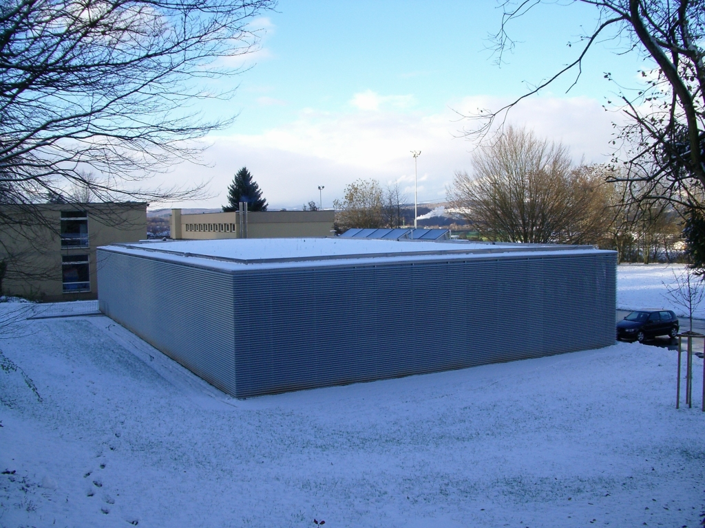

Bad Zurzach, Umbau und Neubau RehaClinic
Bürotrakt mit Aufenthalts- und Garderobenräume
Lager- und Werkstattgebäude
Parking im Untergeschloss
Grossflächige Lagerplatzüberdachung
| Auftraggeber | RehaClinic Bad Zurzach |
| Gesamtbausumme | ca. CHF 40 Mio. |
| Honorarberechtigte Bausumme | ca. CHF 5 Mio. |
| Projektleiter | Arnaldo Clivio |
| Architekt | C. Tognola + Ch. Stahel + B. Ullmann Architekten BSA SIA SWB, Brugg |
| Ausführung | 2003 - 2008 |
| Erbrachte Leistungen | Projektierung,
Ausschreibung, Baukontrollen, Beton- und Stahlbetonarbeiten, Baugrube |
| Spezielles | Weit gespannte Flachdecken Vorgespannte Abfangdecke über 1. OG Bettenhaus Abfangkonstruktionen mit vorgespannten Verstärkungsträgern Mikropfahlfundationen im bestehenden Gebäude Baugrubenabschlüsse: Nagelwände bis 9.0 m Höhe |
Birrhard Neubau Werkhof Gebr. Meier AG
Strassenbrücke über SBB / Fussgängerbrücke / Lärmschutzwänd
| Auftraggeber | Gebr. Meier AG, Langgass 5, 5244 Birrhard |
| Gesamtbausumme | ca. CHF 12 Mio. |
| Honorarberechtigte Bausumme | ca. CHF 3.6 Mio. |
| Projektleiter | Arnaldo Clivio |
| Architekt | UC'NA, Heinrichstrasse 267, 8005 Zürich Herr M. Alberati / Herr T. Trüb |
| Ausführung | 2007 |
| Erbrachte Leistungen | Projektierung Ausschreibung und Realisierung der Stahlbeton- und Stahlbauarbeiten sowie der Tiefbauarbeiten (Erschliessung / Werkleitungen ausserhalb des Gebäudegrundrisses / Versicherung etc.) |
| Spezielles | Bürogeschoss im OG mit 5m Auskragung und stützenfrei (22m) überspannter Einfahrt zum Werkhofareal Aussenwände EG in Isolationsbeton Lagerplatzüberdachung mit grossen Spannweiten |
Brugg Wohn- und Gewerbehaus Trigon
Neubau 5-geschossiges Wohn- und Geschäftshaus
Umbau Dach Kino Odeon
| Auftraggeber | M. Kuhn, 5200 Brugg |
| Gesamtbausumme | ca. CHF 6 Mio. |
| Honorarberechtigte Bausumme | ca. CHF 1 Mio. |
| Projektleiter | Arnaldo Clivio |
| Architekt | René Stoos, dipl. Architekt ETH SIA BSA, 5200 Brugg |
| Ausführung | 2006 |
| Erbrachte Leistungen |
Projektierung Ausschreibung und Realisierung von Stahlbeton- und Stahlbauarbeiten |
| Spezielles |
Sichtbetonfassade Aufwendige Gestaltung des Treppenhauses Allseitig beengte Platzverhältnisse für die Realisierung |
Windisch, Terrassenhäuser "Sonnhalde"
Neubau von 4 Terassenhäusern (5 Geschosse) mit Schutzraum und Autoeinstellhalle
| Auftraggeber | Baukonsortium Sonnhalde, Reutenenstrasse 5, 5210 Windisch |
| Gesamtbausumme | ca. CHF 5 Mio. |
| Honorarberechtigte Bausumme | ca. CHF 0.5 Mio. |
| Projektleiter | Jean-Bernard Thiévent |
| Architekt | Hartmann Keller, Architekten + Planer, Dohlenzelgstrasse 39, 5210 Windisch |
| Ausführung | 2005 - 2006 |
| Erbrachte Leistungen | Projektierung, Ausschreibung, Baukontrollen |
| Spezielles |
Baugrubensicherungen mittels Vernagelung Abfangdecke über Autoeinstellhalle Weitauskragende Terrassendecken |
Hausen, Sanierung und Erweiterung Schulanlage
Erweiterungsbau
Sanierung und Umbau Meyerschulhaus und Lindhofschulhaus
| Auftraggeber | Gemeinde Hausen AG |
| Gesamtbausumme | ca. CHF 3 Mio. |
| Honorarberechtigte Bausumme | ca. CHF 0.5 Mio. |
| Projektleiter | Jean-Bernard Thiévent |
| Architekt | Schmidlin & Zulauf, Architekten ETH SIA BSA, 5400 Baden |
| Ausführung | 2004 - 2005 |
| Erbrachte Leistungen |
Projektierung Ausschreibung und Realisierung Beratung Sanierung bestehende Schulanlagen |
| Spezielles | Innenwände in Sichtbeton |
Bad Zurzach, Wohnüberbauung "auf Rainen"
Neubau von 2 Mehrfamilienhäuser mit Autoeinstellhalle
Umbau AEW Gebäude in Lofts
| Auftraggeber | IG Rainen, c/o Werner Ott, Baslerstrasse 22, 5330 Bad Zurzach |
| Gesamtbausumme | ca. CHF 7 Mio. |
| Honorarberechtigte Bausumme | ca. CHF 0.9 Mio. |
| Projektleiter | Jean-Bernard Thiévent |
| Architekt | Walker Architekten AG, Neumarkt 1, 5200 Brugg |
| Ausführung | 2004 |
| Erbrachte Leistungen |
Projektierung Ausschreibung und Realisierung |
| Spezielles |
Unterfangung bestehendes AEW Gebäude Umbaumassnahmen beim AEW Gebäude mit Überprüfung der Tragstruktur |
Schinznach-Bad, Sanierung und Erweiterung Schulanlage
Neubau Aula
Sanierung und Umbau Turnhalle
Neubau Eingangshalle und Verbindungsbau sowie neue Mehrzweckräume Schulhaus
| Auftraggeber | Gemeinde Schinznach-Bad |
| Gesamtbausumme | ca. CHF 7 Mio. |
| Honorarberechtigte Bausumme | ca. CHF 1 Mio. |
| Projektleiter | Jean-Bernard Thiévent |
| Architekt | H.P. Bircher C. Roth C. von Arx, dipl. Architekten FH/TS AG, Aarau |
| Ausführung | 2003 - 2004 |
| Erbrachte Leistungen |
Projektierung Ausschreibung und Realisierung Beratung der Instandsetzungen der Sichtbetonfassade der bestehenden Bauten |
| Spezielles |
Umbaumassnahmen Untergeschoss
Turnhalle u.a. Ausbruch Längswand und Einbau neuer Stützen Neubau in Sichtbeton |
Mumpf, Neues Oberstufenzentrum Schulverband Oberstufe Fischingertall
Neubau 3-geschossiges Schulgebäude
Neubau Turnhalle
| Auftraggeber | Gemeinden Schupfart, Obermumpf, Mumpf und Wallbach |
| Gesamtbausumme | ca. CHF 12 Mio. |
| Honorarberechtigte Bausumme | ca. CHF 2 Mio. |
| Projektleiter | Arnaldo Clivio |
| Architekt | René Stoos, dipl. Architekt ETH SIA BSA, 5200 Brugg |
| Ausführung | 2003 - 2004 |
| Erbrachte Leistungen | Projektierung, Ausschreibung und Realisierung |
| Spezielles |
Weitgespannte Flachdecken Sichtbetontragwände Dachkonstruktion der Turnhalle mit Holzbindern |


Villigen, Neubau Betriebsgebäude E. Schwarz Landesprodukte AG
Wiederaufbau des durch Brand zerstörten Betriebsgebäudes
| Auftraggeber | E. Schwarz Landesprodukte AG, Villigen |
| Gesamtbausumme | ca. CHF 2 Mio. |
| Honorarberechtigte Bausumme | ca. CHF 0.35 Mio. |
| Projektleiter | Arnaldo Clivio |
| Architekt | Keller + Hasenfratz Architekten SIA SWB, 5200 Brugg |
| Ausführung | 2000 |
| Erbrachte Leistungen | Projektierung, Ausschreibung und Realisierung |
| Spezielles | Abstimmung des Tragsystems der neuen Obergeschoss auf die teilweise noch erhaltenen Fundationen und Räume im UG |
Leibstadt, Schulanlage Furlänge
Schulhausneubau
An- und Überbau bestehendes Schulhaus
| Auftraggeber | Gemeinde Leibstadt |
| Gesamtbausumme | ca. CHF 4.5 Mio. |
| Honorarberechtigte Bausumme | ca. CHF 0.7 Mio. |
| Projektleiter | Arnaldo Clivio |
| Architekt | Thoma Schneider, Architekten und Planer AG, Döttingen |
| Ausführung | 1997 |
| Erbrachte Leistungen | Projektierung, Ausschreibung und Realisierung |
| Spezielles |
Flachdecken mit grossen Spannweiten Stahlfachwerkbinder für Dachkonstruktion |
Gebenstorf, Schulanlage Brühl
Erweiterungsbau der bestehenden Anlage um 4-geschossigen Haupttrakt
2-geschossigen Nebentrakt und Verbindungsbau
| Auftraggeber | Gemeinde Gebenstorf |
| Gesamtbausumme | ca. CHF 13 Mio. |
| Honorarberechtigte Bausumme | ca. CHF 1.9 Mio. |
| Projektleiter | Arnaldo Clivio |
| Architekt | Burkard, Meyer Architekten BSA, Baden |
| Ausführung | 1996 |
| Erbrachte Leistungen | Projektierung Ausführung und Realisierung der Pfahlfundationen und Tragkonstruktionen |
| Spezielles |
Flachdecken vorgespannt Tragende Fassadenkonstruktion aus massivem, einschaligem Sichtmauerwerk, auskragende Korridordecken (vorgespannt) mit aufliegender Glasfassadenkonstruktion |

Therwil, Wohnüberbauung Birsmatten
5 Mehrfamilienhäuser mit 2 Tiefgaragen
| Auftraggeber | Rentenanstalt Zürich |
| Gesamtbausumme | ca. CHF 24 Mio. |
| Honorarberechtigte Bausumme | ca. CHF 3.5 Mio. |
| Projektleiter | Jean-Bernard Thiévent |
| Architekt |
Architektengemeinschaft Walter Widmann, dipl. Architekt ETH SIA, Basel Ritter Giger Schmid, Architekten SIA, Basel |
| Ausführung | 1997 - 1999 |
| Erbrachte Leistungen | Projektierung, Ausschreibung und Realisierung |
| Spezielles | Bauen im Grundwasser (GW-Absenkung, "Weisse Wanne") |
Windisch, Erweiterung Altersheim
Um- und Erweiterungsbau Alters- und Pflegeheim Windisch
| Auftraggeber | Stiftung Alters- und Pflegeheim Windisch |
| Gesamtbausumme | ca. CHF 9 Mio. |
| Honorarberechtigte Bausumme | ca. CHF 1.3 Mio. |
| Projektleiter | Arnaldo Clivio |
| Architekt | Hertig, Noetzli, Wagner Architekten, Aarau |
| Ausführung | 1995 |
| Erbrachte Leistungen | Projektierung, Ausschreibung und Realisierung |
| Spezielles | Um- und Anbau unter Aufrechterhaltung des Heimbetriebes |
Rietheim, Schulhauserweiterung
Neubau Turnhalle, Schulhaus und Kindergarten
| Auftraggeber | Gemeinde Rietheim |
| Gesamtbausumme | ca. CHF 6 Mio. |
| Honorarberechtigte Bausumme | ca. CHF 0.9 Mio. |
| Projektleiter | Jean-Bernard Thiévent |
| Architekt | Thoma Schneider Architekten und Planer AG, Döttingen |
| Ausführung | Ausführung Kindergarten 1995 |
| Erbrachte Leistungen |
Projektierung, Ausschreibung und Realisierung
Kindergarten (Schulhaus und Turnhalle wurden aus Subventionsgründen nicht ausgeführt.) |
| Spezielles | Pfahlfundationen für Schulhaus und Turnhalle |
Brugg, Garage und Gewerbehaus im Steiger SELB Immobilien AG
Neubau mit 2 Untergeschossen, Seitentrakte 5-geschossig, Mitteltrakt 2-geschossig
| Auftraggeber | Stephan Bächli, Brugg |
| Gesamtbausumme | ca. CHF 45 Mio. |
| Honorarberechtigte Bausumme | ca. CHF 6.6 Mio. |
| Projektleiter | Jean-Bernard Thiévent |
| Architekt | Erb, Müller, Peter AG, Brugg |
| Ausführung | 1991 |
| Erbrachte Leistungen | Projektierung, Ausschreibung und Realisierung |
| Spezielles |
Vorgespannte Flachdecken mit Spannweiten
8.10 / 8.10 m Vorfabrizierte Betonstützen und -fassaden |
Brugg, Neumarkt 3 (EPA)G
Neubau mit 4 Untergeschossen im Zentrum von Brugg (städtische Verhältnisse
| Auftraggeber | Brugger Liegenschaften AG |
| Gesamtbausumme | ca. CHF 30 Mio. |
| Honorarberechtigte Bausumme | ca. CHF 4.4 Mio. |
| Projektleiter | Jean-Bernard Thiévent |
| Architekt | Droz + Partner AG, Architekten und Planer, Brugg |
| Ausführung | 1990 |
| Erbrachte Leistungen | Projektierung, Ausschreibung und Realisierung der Baugrubenabschlüsse und Tragkonstruktionen |
| Spezielles |
Baugrubenabschlüsse mit verankerten Betonelementwänden
(als Bestandteil der Kellerwände) Flachdecken mit grossen Spannweiten |